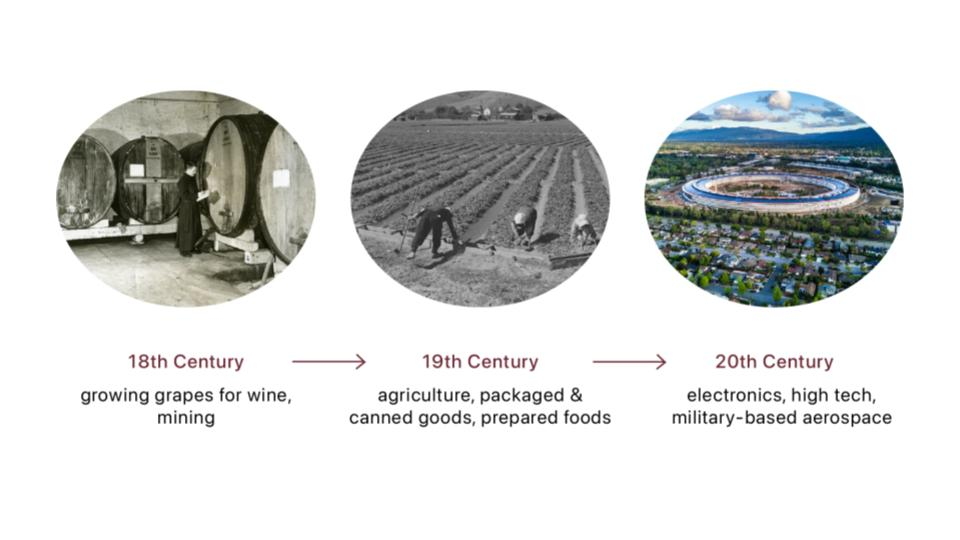
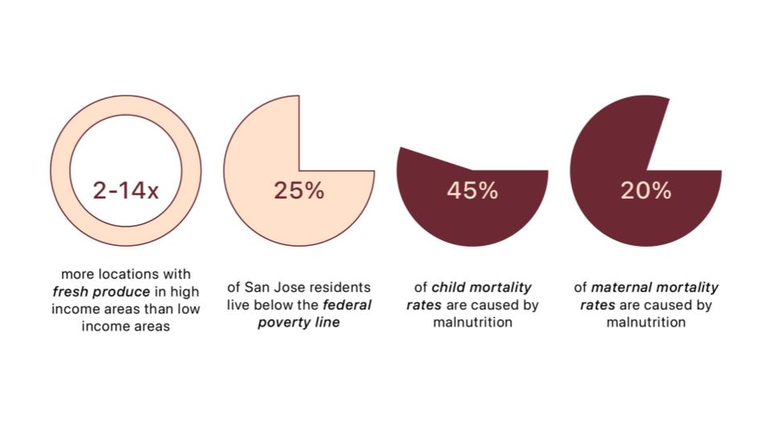
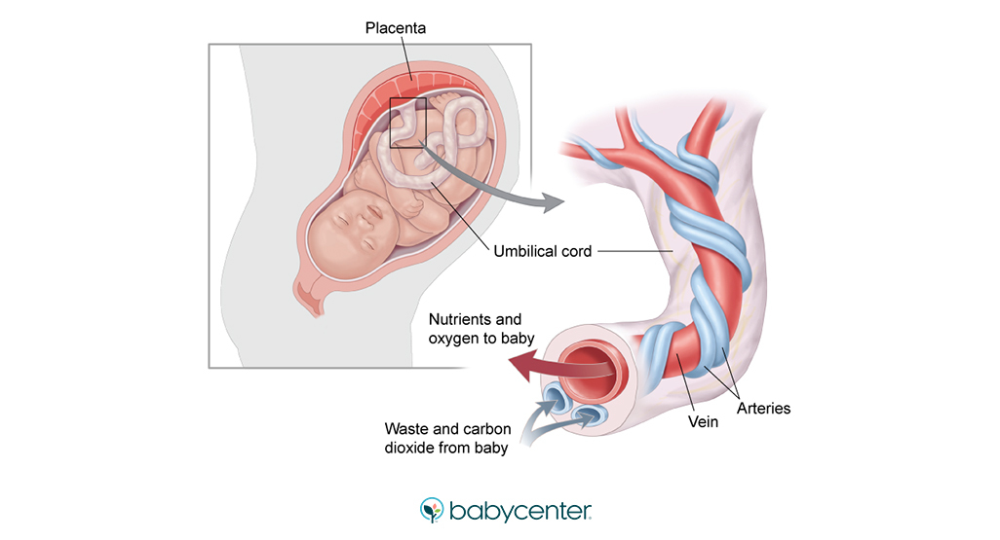
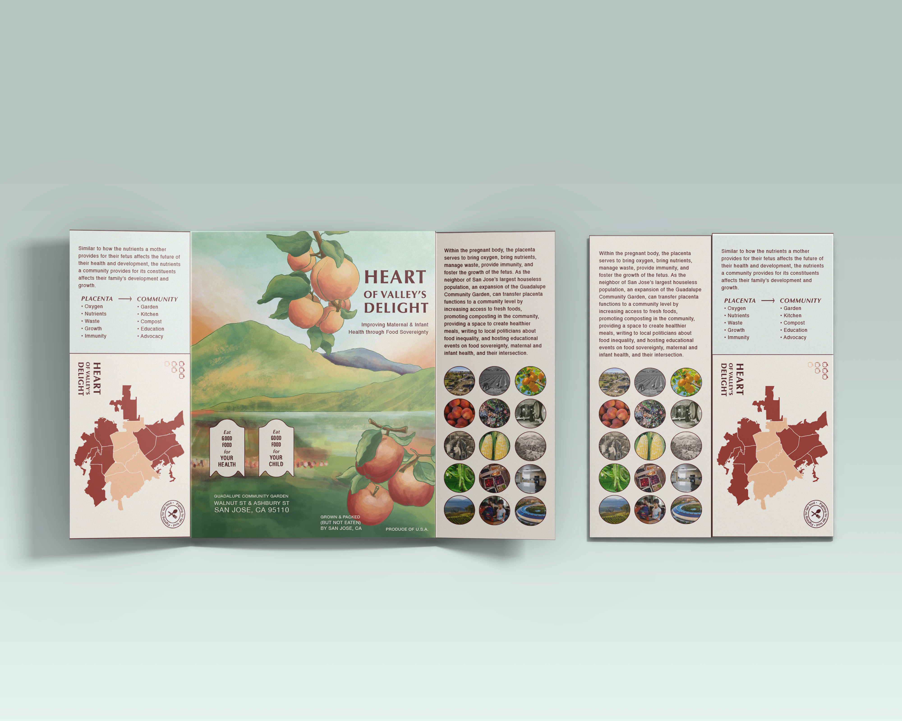

How can biological design address food inequality in the heart of Silicon Valley?
Before San Jose became the heart of Silicon Valley that we know it to be today, viniculture or the growth of grapes for winemaking, was popular in the mid-1800s. Throughout the 19th and 20th Century, San Jose, and the rest of Santa Clara Valley, grew agriculture, packaged and canned goods, and prepared foods like sauces. These included orchard fruits, berries, tree nuts, and vegetables, in addition to packaging, canning, and shipping. Because harvesting produce is very labor intensive, labor unions were on the rise in the 1970s. After World War II, soldiers and veterans took advantage of labor and good ports, creating some of the first big industries within electronics, high tech, and military-based aerospace.
Despite the history and abundance of agriculture and food produced, poverty and food insecurity during pregnancy still exists. There are 2 to 14 times more fresh produce at grocery stores in high income areas in comparison to low income areas. 25% of the community lives below the federal poverty line. Additionally, maternal mortality rates in Black or African American communities are almost 6 times greater than those of White, Asian or Pacific Islander, and Hispanic or Latino communities, while infant mortality rates are 2-3 times greater. When looking at malnutrition in general, studies have shown that it causes 45% of child mortality and 20% of maternal mortality.
This project looks to biology as a framework for community care — drawing on the placenta's five core functions as a design inspiration for how a community might nourish and sustain itself.


San Jose's agricultural history and current food inequality statistics.
The placenta as a model for community nourishment.
The placenta performs five essential functions that map directly onto community needs: transport oxygen, deliver nutrients, manage waste, provide immunity, and foster growth. Using biological design as a methodological lens, the project proposes a community infrastructure that mirrors these functions — centered on the Guadalupe Community Garden.

The placenta's five functions as a design framework for community infrastructure.
Transport oxygen
Expanding the Guadalupe Community Garden as a physical green space that improves air quality and access to nature.
Deliver nutrients
A community kitchen providing fresh food preparation resources to residents without adequate home cooking facilities.
Manage waste
A community composting program closing the loop between food consumption and soil regeneration.
Provide immunity
Advocacy postcards and educational events building long-term community resilience and political voice around food justice.
Foster growth & development
Educational events on food sovereignty, maternal and infant health, and the intersection of the two.
A community brochure and expanded garden proposal for Guadalupe Community Garden.
The project culminated in a brochure communicating the proposal to Guadalupe community members — designed to be accessible, locally resonant, and actionable. The document outlines the five-function framework and its translation into specific programs: garden expansion, community kitchen, composting, advocacy, and education.


Featured in Designing Motherhood and Design Philadelphia.
The project was featured in the Designing Motherhood Instagram, the Design Philadelphia public program, and an open syllabus curriculum — reaching audiences beyond the classroom and situating the work within broader conversations about reproductive justice, food equity, and biological design.